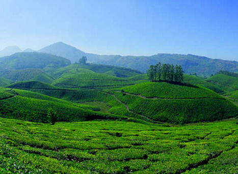
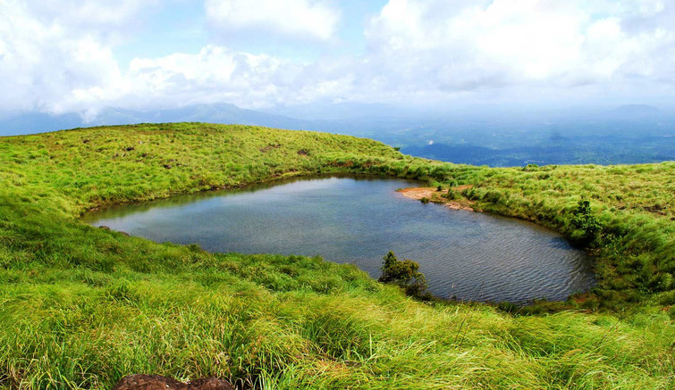
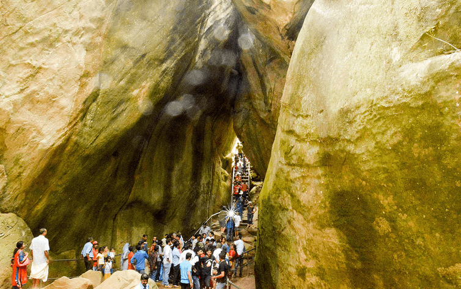
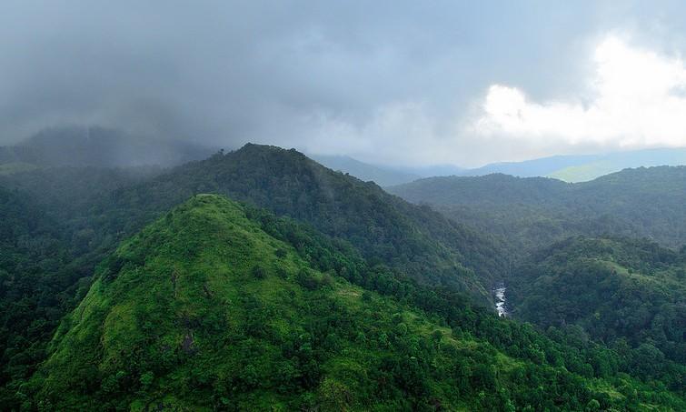
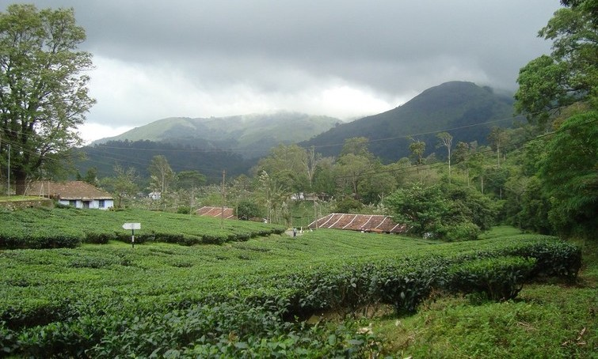
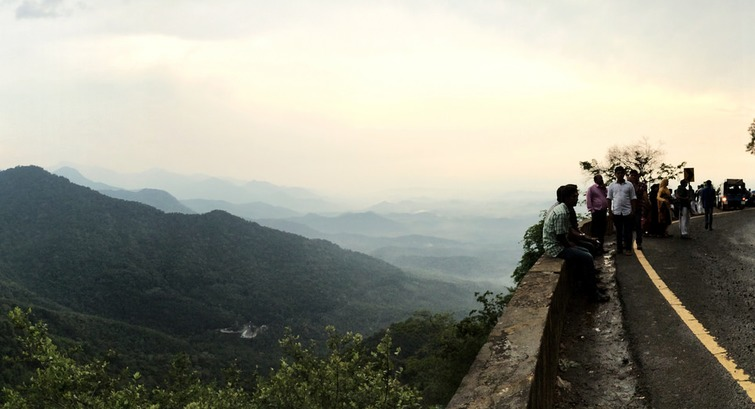
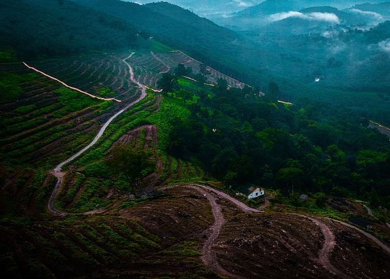
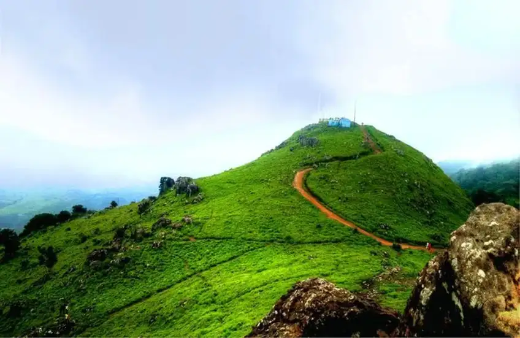

Pamper Your Soul
In charming
Mountain Stations
Of Kerala
Kerala offers the best hill station holiday experience in the world. The hill stations of kerala welcome you to refreshing vacations for your friends and family. Dotted with wildflowers in full bloom, vibrant green landscapes, apple orchards, waterfalls, and unadulterated mountain air, all these hill stations provide a pleasurable experience that you will remember for the rest of your life. Apart from relishing the magical creations of nature and scenic exquisiteness, one can soar high in the sky through mountaineering, trekking, camping, and paragliding amidst misty nature woods.
Your holiday trip to Kerala will undoubtedly be a colorful itinerary with so much to explore
and
experience. The
biological enormity of this mystical nation, with its vast diversity, makes it a great place
to
visit at any time of
the year. And once you have chosen a hill station, there might be the possibility that you
would
wish to explore other
beautiful hill stations of India. These hill stations are strategically located in different
regions of the Indian
Himalayas. They are renowned among domestic and international travelers who seek peace,
beauty,
and thrill in these
mountain stations. Moreover, these stations offer you an escape from the hustle and bustle
of
city life. Most hill
resorts in India still retain their old-world charm and offer an opportunity to experience
some
of God's surprises,
such as frothing rivers, green valleys, snow-covered mountains, deep gorges, misty woods,
and
much more that can
amaze anyone on their India hill vacation.
Top Trending Hill Destinations In Kerala
Here are the 20 travel hotspots located in North Kerala to consider for some memorable holidays:
Munnar in Idukki

Nearest Domestic Airport:
Mangalore
(50 km away)
Nearest International Airport:
Cochin
international Airport( 109 km)
(180 km away)
Nearest Railway Station:
Udumalaippettai
Railway station (85 km) and Angamaly Railway station(109km)
Blessed with a storehouse of wildlife reserves, hills, lakes, and everything good, and nice - Western Ghats, Kerala is just the right place to visit if one like to holiday in a hill station. Filled with lakes, coffee, and tea plantations, waterfalls, wildlife sanctuaries, and mountains, these hill stations are just the perfect places to be whether on a family outing or a romantic escapade. Simple, and interesting, the must visit hill stations in Kerala are Munnar, Thekkady, Wayanad, Vagamon, Kumily, Ponmudi, Lakkidi, Vythiri, Idukki, Peermedu, Charalkunnu, and Mattupetty.The best part about all these places is that apart being the brimming with beautiful landscapes, each one of them has something unique to offer. Like Kumily is known for its spice plantations tour and attractions like Periyar Wildlife Sanctuary, and Thekkady Lake. Whereas, Munnar is famous for its tea plantations.
Chembra Peak in Wayanad

Nearest Domestic Airport:
Kozhikode
(48 km away)
Nearest International Airport:
Kozhikode
(46 km away)
Chembra Peak is a must-visit tourist spot for people who plan a vacation in North Kerala. It is located in Wayanad, one of the most popular hill stations in the state. This hilly region fascinates travelers with its astounding rugged landscape of the Western Ghats. Chembra Peak is a favourite place for adventure lovers as it offers many chances for trekking, rock climbing and other exciting activities. It is the highest peak in Wayanad and is visible from all parts of the district. On the way to this peak, travelers can enjoy the beauty of a heart-shaped lake called ‘Hridayathadakam’. From the peak, they can watch the whole Wayanad and views of Malappuram, Kozhikode and Nilgiri districts.
Edakkal Caves in Wayanad

Nearest Domestic Airport:
Kozhikode
(62 km away)
Nearest International Airport:
Nilambur
(38 km away)
Edakkal Caves is among the top places to visit in North Kerala because of its historical importance. Visitors can enjoy Stone Age carvings of archeological significance at this place. It is interesting for them to watch the carvings belonging to the Neolithic and Mesolithic age. In fact, it is the only known place in the country with such carvings and said to have some connection with Indus Valley Civilization. People can visit the caves from 9:30 am to 4:30 after paying a small entry fee. Reach the base of the Ambukutty Hills by car or bus and climb the hills from there to enjoy the carvings of Edakkal caves.
Silent Valley in Palakkad

Nearest Domestic Airport:
Coimbatore
(120 km away)
Nearest International Airport:
Palakkad
(43 km away)
Even though there are many must-visit places to travel in North Kerala, Silent Valley holds a special place. It is the right destination to enjoy the bio-diversity of the Western Ghats. Located in the north-eastern part of the Palakkad district, the Silent Valley National Park has a collection of more than 1000 flowering plants. It is interesting to know that this park houses around 110 species of orchids. Besides, visitors can enjoy a wide range of animals, birds, butterflies and beetle species at this park. The tropical evergreen forest makes the region a complete nursery of exotic flora and fauna.
Nelliyampathy Hills in Palakkad

Nearest Domestic Airport:
Coimbatore
International Airport (55 km away)
Nearest International Airport:
Palakkad
(56 km away)
Nelliyampathy is a marvelous hill station in North Kerala blessed with matchless natural beauty. One of the great advantages of choosing this panoramic region in North Kerala for your trip is that this destination has so many tourist attractions. In fact, you need to spend 2-3 days to cover all the must-visit attractions in this region. Some of famous attractions in this destination are Nelliyampathy Hill, Seetharkundu Viewpoint and Parambikulam Wildlife Sanctuary. It is wise to check the Kerala travel guide of Tour My India to get an idea about the popular attractions in Nelliyampathy.
Lakkidi View Point in Wayanad

Nearest Domestic Airport:
Kozhikode
(100 km away)
Nearest International Airport:
Kozhikode
(75km away)
Popularly known as the gateway of Wayanad, Lakkidi is one of the most beautiful travel destinations in North Kerala. There is a lot to explore in this monsoon destination which holds the credit of the highest rainfall region in the state. Visitors love its gorgeous streams and rich greenery of the hills. It is also a well known hill station in the state where you can easily find luxury hotels and resorts to enjoy comfortable accommodation. Watching the lovely evenings and enchanting sunrise from Lakkidi Viewpoint can be memorable experiences for each visitor. .
Vagamon

Nearest Domestic Airport: Cochin
International Airport(99 km)
Nearest International Airport:
Kottayam
Railway station (63km away)
The hill station has a chain of 3 beautiful hills called Thangal hill, Murugan hill and Kurismala that give an enchanting feel to this beautiful hill station. So visit Vagamon hill station to experience eternal bliss and peace of mind.The Vagamon hill station offers you a unique and different environ in comparison to other hill stations of Kerala. Besides, being abundant in natural beauty, the place also offers space for spiritual activities. The peaceful surroundings with cool and soft breeze blowing across the valley makes it a perfect place for meditation. .
Ponmudi in Thiruvanthapuram

Nearest Domestic Airport:
Thiruvanthapuram International Airport (58 km away)
Nearest International Airport:
Thiruvanthapuram Railway station (55 km away)
Ponmudi, which overlooks the Arabian Sea and has the Western Ghats in the background, is a great place to experience nature at its best. The lush green hills, tea plantations, mountain flowers, rivulets, and waterfalls give the hill station a distinct charm that draws tourists from far and wide. Ponmudi hill station offers numerous opportunities for adventure seekers as well as wildlife lovers.